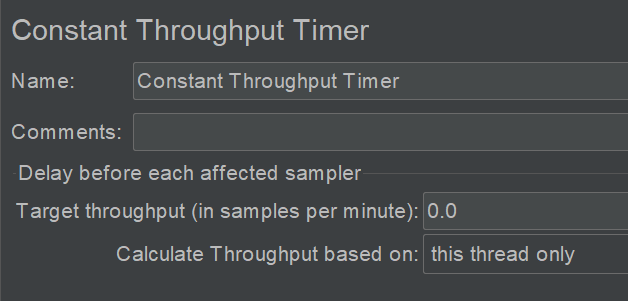

11 JMeter定时器设置延迟与同步¶

JMeter定时器一般用来设置延迟与同步。它的作用域和优先级如下：
定时器的优先级高于Sampler。
在同一作用域（比如控制器下）有多个定时器存在，每个定时器都会执行。
在某一Sampler节点下的定时器，只对这个Sampler有效。
JMeter一共有9种定时器：
Constant Timer¶
固定值，多用来模拟思考时间。
Uniform Random Timer¶
随机时间，分布会更均匀。
Random Delay Maximum：随机延迟时间。
Constant Delay Offset：固定延迟时间。
示例：
会让线程延迟在2.0到2.1秒之间。
Precise Throughput Timer¶
用的比较少，比Constant Throughput Timer更复杂更高级的用来控制吞吐量的一个定时器。
Constant Throughput Timer¶

控制吞吐量，尽量保持Sampler产生的吞吐量（RPS）在一个固定的范围内。
Target throughput：目标吞吐量。JMeter会根据吞吐量、并发线程数来计算迭代的时间间隔，如果吞吐量大过设定值，就增加；反之减少。
Calculate Throughput based on：
this thread only：仅针对当前线程，每个线程互不干扰，分开计算需要延迟多少时间。
all active threads：把所有线程的吞吐量合在一起作为因子计算。
all active threads in current thread group：针对当前线程组中的所有线程。
all active threads (shared)：在所有线程中，随便获取一个线程上次运行的实际来进行计算，结果随机不一定准确，只能努力控制吞吐量在某一个范围。
all active threads in current thread group (shared)：在上面意思一样，范围是当前线程组。
JSR223 Timer¶
跟BeanShell类似，可以运行JavaScript等其他语言。
JDK集成了JS的运行引擎，可以运行JavaScript脚本，JSR223是一个标准，为脚本引擎提供了统一的接口、统一的访问模式。
Synchronizing Timer¶
同步定时器，用来模拟多用户并发同一时刻发起请求。
Number of Simulated Users to Group by：等待x个用户（线程）集合后开始释放（发起请求）。
默认为0，等同于设置为线程租中的线程数量。
Timeout in milliseconds：等待时长，如果等待这么长时间，还没有达到上个选项设置的数量，那么不再等待，立即释放已到达的线程。
默认为0，等待线程数达到上个选项设置的数量才释放。
BeanShell Timer¶
Reset Interpreter：是否每次迭代重置解释器，默认False。官方建议在长时间运行的脚本中才设置为True。
Parameters：入参，可以是单个变量，也可以是数组。
File Name：从脚本文件中读取BeanShell脚本。
Script：
ctx：通过JmeterContent实例获取运行时信息，如log.error(ctx.getThreadNum().toString());。
vars：访问或设置变量，如vars.get("name")，vars.put("name", "dongfanger")。
props：访问JMeter属性（%JMETER_HOME%/bin/jmeter.properties），如props.get("log_level.jmeter")，props.put("log_level.jmeter", "ERROR")。
log：在代码中调用log类来写日志，如log.error("loadtest");。
prev：可以访问前面Sampler的结果。
示例：